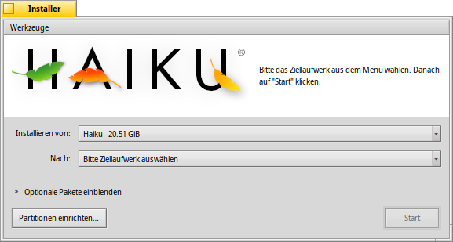

Deutsch
Deutsch Català
Català English
English Español
Español Français
Français Italiano
Italiano Magyar
Magyar Polski
Polski Português
Português Português (Brazil)
Português (Brazil) Română
Română Slovenčina
Slovenčina Suomi
Suomi Svenska
Svenska 中文 ［中文］
中文 ［中文］ Русский
Русский Українська
Українська 日本語
日本語 Installer
Installer
| Deskbar: | ||
| Ort: | /boot/system/apps/Installer | |
| Einstellungen: | keine |
Der Installer installiert (genauer: kopiert) Haiku auf einen Datenträger. Eine "Installation" im klassischen Sinn ist bei Haiku nicht notwendig. Das System muss nicht durch Installation an die vorhandene Hardware angepasst werden, sondern läuft mit identischem Dateiumfang auf allen (unterstützten) Systemen.
Beim Start des Installer werden zunächst einige Informationen angezeigt. Es sind aber keine juristischen Formulierungen eines Endbenutzer-Lizenzvertrages (EULA), sondern tatsächlich wichtige Informationen, die lesenswert sind:
Haiku ist noch im "Alpha"-Stadium. Es wird dringend angeraten, Sicherheitskopien von wichtigen Dateien zu machen; ein Datenverlust ist - obwohl nicht wahrscheinlich - nicht auszuschließen!
Der Installer kann selbst noch keine neue Partition anlegen. Hierfür wird zusätzliche Software, wie die GParted LiveCD benötigt. Erst wenn Haikus Datenträgerverwaltung vollkommen sicher ist, wird es möglich sein, während der Installation die Partitionen zu ändern.
- Haiku kann zum Boot-Manager GRUB hinzugefügt werden. Wie das genau geht, wird in einer Online-Anleitung (Englisch) beschrieben.
Nach Bestätigung der Informationen durch Drücken von erscheint dieses Fenster:
Im ersten Auswahlmenü ist die Quelle der Installation zu wählen. Dies kann entweder ein bereits installiertes Haiku sein, oder ein explizites Installationsmedium, wie zum Beispiel die Haiku Alpha1-CD.
Das zweite Auswahlmenü bezeichnet das Ziel der Installation. Dieses Ziel, das bereits vor der dem Start von Installer existieren muss, wird durch die Installation vollständig überschrieben; eine nachträgliche Rettung von darin gespeicherten Daten ist nicht möglich.
Durch einen Klick auf das Dreieck neben Optionale Pakete einblenden werden, so vorhanden, zusätzliche Programmpakete angeboten, die mitinstalliert werden können.
Wie bereits erwähnt, wird die Zielpartition vollständig überschrieben. Man muss daher sicher sein, die richtige Partition gewählt zu haben. Über wird das Programm Datenträgerverwaltung aufgerufen, in dem man eine Übersicht über die Partitionen erhält.
Mit Klick auf wird der eigentliche Installations-Prozess gestartet, der den /home/ und den /system/ Ordner auf die Zielpartition kopiert und diese bootfähig macht.
 Tools
Tools
Durch die Installation anderer Betriebssysteme kann es vorkommen, dass Haiku nicht mehr startfähig ist, weil der "Boot-Sektor" überschrieben wurde. In diesem Fall kann man von der Installations-CD booten und unter die nicht mehr startfähige Haiku-Installation einstellen und aus dem Menü mittels den vorherigen Zustand wieder herstellen.
Daneben kann im Menü noch mit ein Menü in den Boot-Sektor geschrieben werden, aus dem das zu bootende Betriebssystem ausgewählt werden kann. Näheres dazu unter Bootmanager.
Der Haiku Bootmanager wird nicht gebraucht, wenn man bereits einen Bootmanager wie GRUB benutzt (siehe oben) oder Haiku als einziges Betriebssystem auf dem Rechner installiert ist.